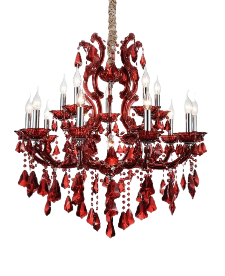

We would like to invite you to
celebrate with us the most
special day of our lives
بِسْمِ اللّٰهِ الرَّحْمٰنِ الرَّحِيْمِ
In the name of Allah
the Most Gracious and the Most Merciful
The pleasure of your company
With the blessings of Allah
The Groom
Syed Zain Ul AbdinS/o Syed Nadeem
WithThe Bride
Syeda Qurrat Ul AinD/o Syed Ather Hussaini
Together with their beloved families, request the honour of
your presence as they begin their journey of a lifetime.
A little surprise
Rub the wax seal to reveal our date
Counting the moments
Since we said Qubool
Together since
03 September 2026
Together For
We celebrate
Where hearts gather
▲ Tap a venue to open it in Google Maps
Every step so far
Your presence is our gift
By the grace of Allah, our hearts have found each other. We would be honoured by your presence and prayers as we begin this blessed journey together.
#QurratWedsZain